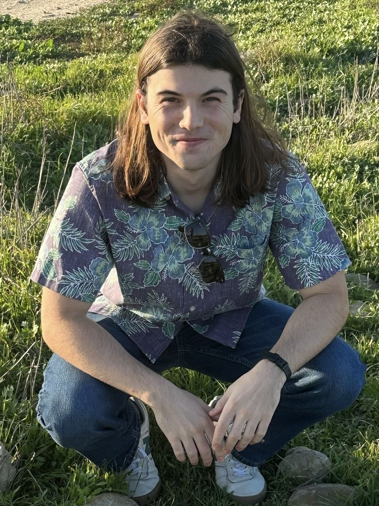

Welcome To My Site

My name is Alex, thanks for stopping by my personal website. This site includes some of my professional work & interests, as well as some of my hobbies & projects. Feel free to look around and reach out if you'd like to connect. You can find me on LinkedIn or GitHub. Or, you can always shoot me an email at alexander.saltmarsh@gmail.com.
Hello. I'm an aerospace engineer, currently focused on test engineering with a particular interest in propulsion systems. Space systems are pretty incredible, and I hope that through my work I can help take us to Mars and beyond. I got my Bachelor's in Aerospace Engineering at UCSD and am currently pursuing a Master's in Aeronautics & Astronautics at Stanford. I like the outdoors. In my time off you'll probably find me backpacking, fishing, or hiking. I really enjoy computer videogames (especially strategy titles). I also like reading fantasy and sci-fi. Soccer is quite fun. Punk rock is pretty cool. And once in a while I'll get out to surf, good to spend time on the water.